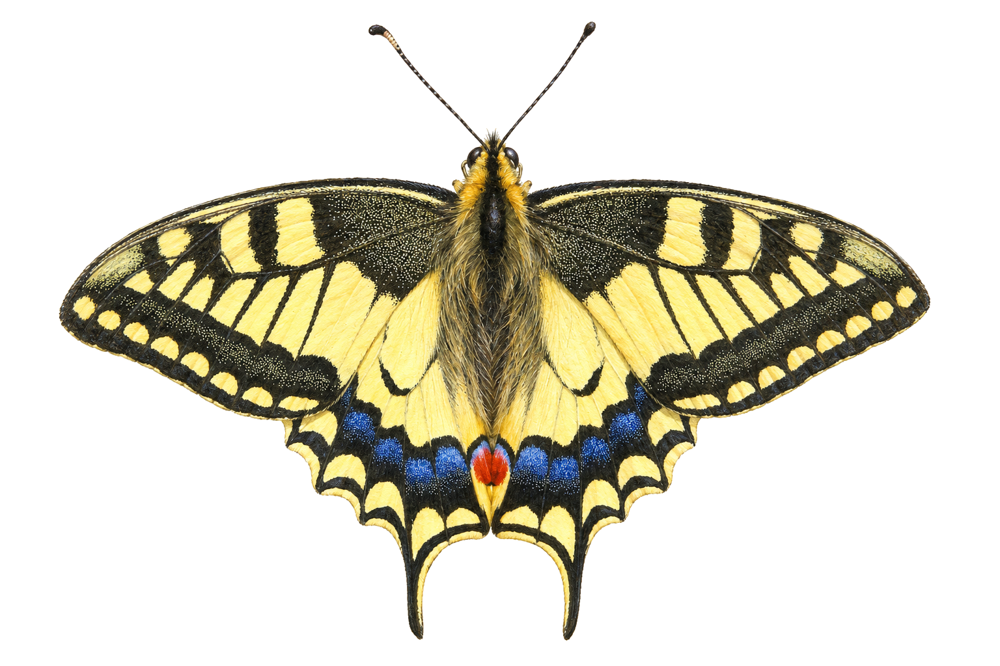

Papilionidae · 002 / 165
ওল্ড ওয়ার্ল্ড সোয়ালো-টেল
Papilio machaon

বৈশিষ্ট্য ও শনাক্তকরণ
হলুদ-কালো ডানা; সামনের ডানার গোড়ায় চওড়া কালো অংশ থাকে। ওকিনাওয়ায় সাধারণ স্থায়ী প্রজাতি নয়।
স্ত্রী ও পুরুষের পার্থক্য
বসন্তের রূপে পার্থক্য কম। গ্রীষ্মের স্ত্রী সাধারণত পুরুষের চেয়ে বড় ও ফ্যাকাশে।
আকার
সামনের এক ডানার দৈর্ঘ্য 36–70 mm; সাধারণ নির্দেশক, শুধু ওকিনাওয়ার নমুনার পরিসর নয়।
ওকিনাওয়ার দ্বীপে রেকর্ড
স্থানীয় সূত্রে উল্লিখিত দ্বীপের রেকর্ড নিচের সূত্রে দেখুন। প্রকাশিত তালিকায় ওকিনাওয়া ও ইশিগাকি দ্বীপের রেকর্ড আছে। সাধারণ আবাস রৌদ্রোজ্জ্বল তৃণভূমি ও ক্ষেত।
আবাসস্থল
সাধারণত রৌদ্রোজ্জ্বল ঘাসজমি ও ক্ষেত; এটি ওকিনাওয়ায় স্থায়ী আবাসের প্রমাণ নয়।
জীবনযাপন ও অতিরিক্ত তথ্য
ওকিনাওয়া দ্বীপের একটি প্রতিবেদন জাহাজে আগমনের কথা বলে। ইশিগাকির ১৯৯৪ সালের শনাক্তকরণ নিয়ে সন্দেহ প্রকাশ করা হয়েছে। এখানে স্থানীয় তালিকা অনুযায়ী P. machaon ব্যবহৃত; কিছু সাম্প্রতিক সূত্রে জাপানের গোষ্ঠীকে P. hippocrates বলা হয়।
শূককীট ও খাদ্য উদ্ভিদ
সাধারণভাবে গাজর ও পার্সলির মতো Apiaceae খায়। শেষ পর্যায়ে সবুজ দেহে কালো বলয় ও কমলা বিন্দু থাকে; এটি ওকিনাওয়ার প্রজননের প্রমাণ নয়।
তথ্যসূত্র ও সহায়ক পাঠ
- 沖縄蝶類生態図鑑：キアゲハ
ডেটায় উল্লেখিত সূত্র দেখার তারিখ: 2026-11-10 - 昆虫エクスプローラ：キアゲハ
ডেটায় উল্লেখিত সূত্র দেখার তারিখ: 2026-11-10 - 国土交通省：キアゲハ（季節型と雌雄差）
ডেটায় উল্লেখিত সূত্র দেখার তারিখ: 2026-11-10
তথ্য সরবরাহকৃত ডেটার উপর ভিত্তি করে তৈরি (হালনাগাদ: ১০ নভেম্বর ২০২৬)। কোনো দ্বীপের রেকর্ড সেখানে বর্তমান স্থায়ী বসবাস বা সহজে দেখা পাওয়ার নিশ্চয়তা নয়। চিত্র নির্দেশক; শনাক্তকরণে বাস্তব নমুনা ও সূত্র মিলিয়ে দেখুন।